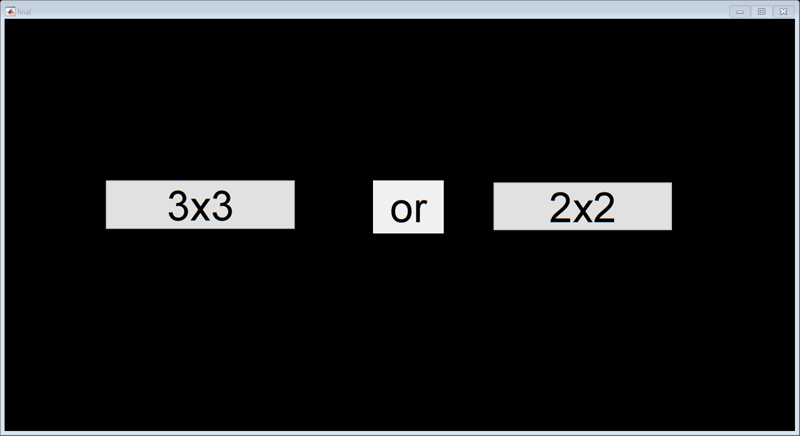

function varargout = final(varargin) % FINAL MATLAB code for final.fig % FINAL, by itself, creates a new FINAL or raises the existing % singleton*. % % H = FINAL returns the handle to a new FINAL or the handle to % the existing singleton*. % % FINAL('CALLBACK',hObject,eventData,handles,...) calls the local % function named CALLBACK in FINAL.M with the given input arguments. % % FINAL('Property','Value',...) creates a new FINAL or raises the % existing singleton*. Starting from the left, property value pairs are % applied to the GUI before final_OpeningFcn gets called. An % unrecognized property name or invalid value makes property application % stop. All inputs are passed to final_OpeningFcn via varargin. % % *See GUI Options on GUIDE's Tools menu. Choose "GUI allows only one % instance to run (singleton)". % % See also: GUIDE, GUIDATA, GUIHANDLES % Edit the above text to modify the response to help final % Last Modified by GUIDE v2.5 20-Nov-2018 23:05:41 % Begin initialization code - DO NOT EDIT gui_Singleton = 1; gui_State = struct('gui_Name', mfilename, ... 'gui_Singleton', gui_Singleton, ... 'gui_OpeningFcn', @final_OpeningFcn, ... 'gui_OutputFcn', @final_OutputFcn, ... 'gui_LayoutFcn', [] , ... 'gui_Callback', []); if nargin && ischar(varargin{1}) gui_State.gui_Callback = str2func(varargin{1}); end if nargout [varargout{1:nargout}] = gui_mainfcn(gui_State, varargin{:}); else gui_mainfcn(gui_State, varargin{:}); end % End initialization code - DO NOT EDIT % --- Executes just before final is made visible. function final_OpeningFcn(hObject, eventdata, handles, varargin) % This function has no output args, see OutputFcn. % hObject handle to figure % eventdata reserved - to be defined in a future version of MATLAB % handles structure with handles and user data (see GUIDATA) % varargin command line arguments to final (see VARARGIN) % Choose default command line output for final handles.output = hObject; % Update handles structure guidata(hObject, handles); set(gcf,'color','k') % UIWAIT makes final wait for user response (see UIRESUME) % uiwait(handles.figure1); % --- Outputs from this function are returned to the command line. function varargout = final_OutputFcn(hObject, eventdata, handles) % varargout cell array for returning output args (see VARARGOUT); % hObject handle to figure % eventdata reserved - to be defined in a future version of MATLAB % handles structure with handles and user data (see GUIDATA) % Get default command line output from handles structure varargout{1} = handles.output; % --- Executes on button press in start. function start_Callback(hObject, eventdata, handles) % hObject handle to start (see GCBO) % eventdata reserved - to be defined in a future version of MATLAB % handles structure with handles and user data (see GUIDATA) finalstuff(handles) % --- Executes on button press in scramble. function scramble_Callback(hObject, eventdata, handles) % hObject handle to scramble (see GCBO) % eventdata reserved - to be defined in a future version of MATLAB % handles structure with handles and user data (see GUIDATA) scramble % --- Executes on button press in undo. function undo_Callback(hObject, eventdata, handles) % hObject handle to undo (see GCBO) % eventdata reserved - to be defined in a future version of MATLAB % handles structure with handles and user data (see GUIDATA) rotate(handles) function enter_Callback(hObject, eventdata, handles) % hObject handle to enter (see GCBO) % eventdata reserved - to be defined in a future version of MATLAB % handles structure with handles and user data (see GUIDATA) % Hints: get(hObject,'String') returns contents of enter as text % str2double(get(hObject,'String')) returns contents of enter as a double % --- Executes during object creation, after setting all properties. function enter_CreateFcn(hObject, eventdata, handles) % hObject handle to enter (see GCBO) % eventdata reserved - to be defined in a future version of MATLAB % handles empty - handles not created until after all CreateFcns called % Hint: edit controls usually have a white background on Windows. % See ISPC and COMPUTER. if ispc && isequal(get(hObject,'BackgroundColor'), get(0,'defaultUicontrolBackgroundColor')) set(hObject,'BackgroundColor','white'); end % --- Executes on button press in undo2. function undo2_Callback(hObject, eventdata, handles) % hObject handle to undo2 (see GCBO) % eventdata reserved - to be defined in a future version of MATLAB % handles structure with handles and user data (see GUIDATA) rotateoff(handles) % --- Executes on button press in R. function R_Callback(hObject, eventdata, handles) % hObject handle to R (see GCBO) % eventdata reserved - to be defined in a future version of MATLAB % handles structure with handles and user data (see GUIDATA) right % --- Executes on button press in Rp. function Rp_Callback(hObject, eventdata, handles) % hObject handle to Rp (see GCBO) % eventdata reserved - to be defined in a future version of MATLAB % handles structure with handles and user data (see GUIDATA) rightp % --- Executes on button press in L. function L_Callback(hObject, eventdata, handles) % hObject handle to L (see GCBO) % eventdata reserved - to be defined in a future version of MATLAB % handles structure with handles and user data (see GUIDATA) left % --- Executes on button press in Lp. function Lp_Callback(hObject, eventdata, handles) % hObject handle to Lp (see GCBO) % eventdata reserved - to be defined in a future version of MATLAB % handles structure with handles and user data (see GUIDATA) leftp % --- Executes on button press in F. function F_Callback(hObject, eventdata, handles) % hObject handle to F (see GCBO) % eventdata reserved - to be defined in a future version of MATLAB % handles structure with handles and user data (see GUIDATA) front % --- Executes on button press in Fp. function Fp_Callback(hObject, eventdata, handles) % hObject handle to Fp (see GCBO) % eventdata reserved - to be defined in a future version of MATLAB % handles structure with handles and user data (see GUIDATA) frontp % --- Executes on button press in B. function B_Callback(hObject, eventdata, handles) % hObject handle to B (see GCBO) % eventdata reserved - to be defined in a future version of MATLAB % handles structure with handles and user data (see GUIDATA) back % --- Executes on button press in Bp. function Bp_Callback(hObject, eventdata, handles) % hObject handle to Bp (see GCBO) % eventdata reserved - to be defined in a future version of MATLAB % handles structure with handles and user data (see GUIDATA) backp % --- Executes on button press in U. function U_Callback(hObject, eventdata, handles) % hObject handle to U (see GCBO) % eventdata reserved - to be defined in a future version of MATLAB % handles structure with handles and user data (see GUIDATA) top % --- Executes on button press in Up. function Up_Callback(hObject, eventdata, handles) % hObject handle to Up (see GCBO) % eventdata reserved - to be defined in a future version of MATLAB % handles structure with handles and user data (see GUIDATA) topp % --- Executes on button press in D. function D_Callback(hObject, eventdata, handles) % hObject handle to D (see GCBO) % eventdata reserved - to be defined in a future version of MATLAB % handles structure with handles and user data (see GUIDATA) bottom % --- Executes on button press in Dp. function Dp_Callback(hObject, eventdata, handles) % hObject handle to Dp (see GCBO) % eventdata reserved - to be defined in a future version of MATLAB % handles structure with handles and user data (see GUIDATA) bottomp function colon_Callback(hObject, eventdata, handles) % hObject handle to colon (see GCBO) % eventdata reserved - to be defined in a future version of MATLAB % handles structure with handles and user data (see GUIDATA) % Hints: get(hObject,'String') returns contents of colon as text % str2double(get(hObject,'String')) returns contents of colon as a double % --- Executes during object creation, after setting all properties. function colon_CreateFcn(hObject, eventdata, handles) % hObject handle to colon (see GCBO) % eventdata reserved - to be defined in a future version of MATLAB % handles empty - handles not created until after all CreateFcns called % Hint: edit controls usually have a white background on Windows. % See ISPC and COMPUTER. if ispc && isequal(get(hObject,'BackgroundColor'), get(0,'defaultUicontrolBackgroundColor')) set(hObject,'BackgroundColor','white'); end % --- Executes on button press in timer. function timer_Callback(hObject, eventdata, handles) % hObject handle to timer (see GCBO) % eventdata reserved - to be defined in a future version of MATLAB % handles structure with handles and user data (see GUIDATA) timerhj(handles) % --- Executes on button press in stoptimer. function stoptimer_Callback(hObject, eventdata, handles) % hObject handle to stoptimer (see GCBO) % eventdata reserved - to be defined in a future version of MATLAB % handles structure with handles and user data (see GUIDATA) stoptimerhj(handles) % --- Executes on button press in threebythree. function threebythree_Callback(hObject, eventdata, handles) % hObject handle to threebythree (see GCBO) % eventdata reserved - to be defined in a future version of MATLAB % handles structure with handles and user data (see GUIDATA) twobytwo(handles) % --- Executes on button press in tf. function tf_Callback(hObject, eventdata, handles) % hObject handle to tf (see GCBO) % eventdata reserved - to be defined in a future version of MATLAB % handles structure with handles and user data (see GUIDATA) twofront % --- Executes on button press in tfh. function tfh_Callback(hObject, eventdata, handles) % hObject handle to tfh (see GCBO) % eventdata reserved - to be defined in a future version of MATLAB % handles structure with handles and user data (see GUIDATA) twofronth % --- Executes on button press in tfho. function tfho_Callback(hObject, eventdata, handles) % hObject handle to tfho (see GCBO) % eventdata reserved - to be defined in a future version of MATLAB % handles structure with handles and user data (see GUIDATA) twofrontho % --- Executes on button press in tfp. function tfp_Callback(hObject, eventdata, handles) % hObject handle to tfp (see GCBO) % eventdata reserved - to be defined in a future version of MATLAB % handles structure with handles and user data (see GUIDATA) twofrontp % --- Executes on button press in tfph. function tfph_Callback(hObject, eventdata, handles) % hObject handle to tfph (see GCBO) % eventdata reserved - to be defined in a future version of MATLAB % handles structure with handles and user data (see GUIDATA) twofrontph % --- Executes on button press in tfpho. function tfpho_Callback(hObject, eventdata, handles) % hObject handle to tfpho (see GCBO) % eventdata reserved - to be defined in a future version of MATLAB % handles structure with handles and user data (see GUIDATA) twofrontpho % --- Executes on button press in tb. function tb_Callback(hObject, eventdata, handles) % hObject handle to tb (see GCBO) % eventdata reserved - to be defined in a future version of MATLAB % handles structure with handles and user data (see GUIDATA) twoback % --- Executes on button press in tbh. function tbh_Callback(hObject, eventdata, handles) % hObject handle to tbh (see GCBO) % eventdata reserved - to be defined in a future version of MATLAB % handles structure with handles and user data (see GUIDATA) twobackh % --- Executes on button press in tbho. function tbho_Callback(hObject, eventdata, handles) % hObject handle to tbho (see GCBO) % eventdata reserved - to be defined in a future version of MATLAB % handles structure with handles and user data (see GUIDATA) twobackho % --- Executes on button press in tbp. function tbp_Callback(hObject, eventdata, handles) % hObject handle to tbp (see GCBO) % eventdata reserved - to be defined in a future version of MATLAB % handles structure with handles and user data (see GUIDATA) twobackp % --- Executes on button press in tbph. function tbph_Callback(hObject, eventdata, handles) % hObject handle to tbph (see GCBO) % eventdata reserved - to be defined in a future version of MATLAB % handles structure with handles and user data (see GUIDATA) twobackph % --- Executes on button press in tbpho. function tbpho_Callback(hObject, eventdata, handles) % hObject handle to tbpho (see GCBO) % eventdata reserved - to be defined in a future version of MATLAB % handles structure with handles and user data (see GUIDATA) twobackpho % --- Executes on button press in tr. function tr_Callback(hObject, eventdata, handles) % hObject handle to tr (see GCBO) % eventdata reserved - to be defined in a future version of MATLAB % handles structure with handles and user data (see GUIDATA) tworight % --- Executes on button press in trh. function trh_Callback(hObject, eventdata, handles) % hObject handle to trh (see GCBO) % eventdata reserved - to be defined in a future version of MATLAB % handles structure with handles and user data (see GUIDATA) tworighth % --- Executes on button press in trho. function trho_Callback(hObject, eventdata, handles) % hObject handle to trho (see GCBO) % eventdata reserved - to be defined in a future version of MATLAB % handles structure with handles and user data (see GUIDATA) tworightho % --- Executes on button press in trp. function trp_Callback(hObject, eventdata, handles) % hObject handle to trp (see GCBO) % eventdata reserved - to be defined in a future version of MATLAB % handles structure with handles and user data (see GUIDATA) tworightp % --- Executes on button press in trph. function trph_Callback(hObject, eventdata, handles) % hObject handle to trph (see GCBO) % eventdata reserved - to be defined in a future version of MATLAB % handles structure with handles and user data (see GUIDATA) tworightph % --- Executes on button press in trpho. function trpho_Callback(hObject, eventdata, handles) % hObject handle to trpho (see GCBO) % eventdata reserved - to be defined in a future version of MATLAB % handles structure with handles and user data (see GUIDATA) tworightpho % --- Executes on button press in tl. function tl_Callback(hObject, eventdata, handles) % hObject handle to tl (see GCBO) % eventdata reserved - to be defined in a future version of MATLAB % handles structure with handles and user data (see GUIDATA) twoleft % --- Executes on button press in tlh. function tlh_Callback(hObject, eventdata, handles) % hObject handle to tlh (see GCBO) % eventdata reserved - to be defined in a future version of MATLAB % handles structure with handles and user data (see GUIDATA) twolefth % --- Executes on button press in tlho. function tlho_Callback(hObject, eventdata, handles) % hObject handle to tlho (see GCBO) % eventdata reserved - to be defined in a future version of MATLAB % handles structure with handles and user data (see GUIDATA) twoleftho % --- Executes on button press in tlp. function tlp_Callback(hObject, eventdata, handles) % hObject handle to tlp (see GCBO) % eventdata reserved - to be defined in a future version of MATLAB % handles structure with handles and user data (see GUIDATA) twoleftp % --- Executes on button press in tlph. function tlph_Callback(hObject, eventdata, handles) % hObject handle to tlph (see GCBO) % eventdata reserved - to be defined in a future version of MATLAB % handles structure with handles and user data (see GUIDATA) twoleftph % --- Executes on button press in tlpho. function tlpho_Callback(hObject, eventdata, handles) % hObject handle to tlpho (see GCBO) % eventdata reserved - to be defined in a future version of MATLAB % handles structure with handles and user data (see GUIDATA) twoleftpho % --- Executes on button press in tu. function tu_Callback(hObject, eventdata, handles) % hObject handle to tu (see GCBO) % eventdata reserved - to be defined in a future version of MATLAB % handles structure with handles and user data (see GUIDATA) twotop % --- Executes on button press in tuh. function tuh_Callback(hObject, eventdata, handles) % hObject handle to tuh (see GCBO) % eventdata reserved - to be defined in a future version of MATLAB % handles structure with handles and user data (see GUIDATA) twotoph % --- Executes on button press in tuho. function tuho_Callback(hObject, eventdata, handles) % hObject handle to tuho (see GCBO) % eventdata reserved - to be defined in a future version of MATLAB % handles structure with handles and user data (see GUIDATA) twotopho % --- Executes on button press in tup. function tup_Callback(hObject, eventdata, handles) % hObject handle to tup (see GCBO) % eventdata reserved - to be defined in a future version of MATLAB % handles structure with handles and user data (see GUIDATA) twotopp % --- Executes on button press in tuph. function tuph_Callback(hObject, eventdata, handles) % hObject handle to tuph (see GCBO) % eventdata reserved - to be defined in a future version of MATLAB % handles structure with handles and user data (see GUIDATA) twotopph % --- Executes on button press in tupho. function tupho_Callback(hObject, eventdata, handles) % hObject handle to tupho (see GCBO) % eventdata reserved - to be defined in a future version of MATLAB % handles structure with handles and user data (see GUIDATA) twotoppho % --- Executes on button press in td. function td_Callback(hObject, eventdata, handles) % hObject handle to td (see GCBO) % eventdata reserved - to be defined in a future version of MATLAB % handles structure with handles and user data (see GUIDATA) twobottom % --- Executes on button press in tdh. function tdh_Callback(hObject, eventdata, handles) % hObject handle to tdh (see GCBO) % eventdata reserved - to be defined in a future version of MATLAB % handles structure with handles and user data (see GUIDATA) twobottomh % --- Executes on button press in tdho. function tdho_Callback(hObject, eventdata, handles) % hObject handle to tdho (see GCBO) % eventdata reserved - to be defined in a future version of MATLAB % handles structure with handles and user data (see GUIDATA) twobottomho % --- Executes on button press in tdp. function tdp_Callback(hObject, eventdata, handles) % hObject handle to tdp (see GCBO) % eventdata reserved - to be defined in a future version of MATLAB % handles structure with handles and user data (see GUIDATA) twobottomp % --- Executes on button press in tdph. function tdph_Callback(hObject, eventdata, handles) % hObject handle to tdph (see GCBO) % eventdata reserved - to be defined in a future version of MATLAB % handles structure with handles and user data (see GUIDATA) twobottomph % --- Executes on button press in tdpho. function tdpho_Callback(hObject, eventdata, handles) % hObject handle to tdpho (see GCBO) % eventdata reserved - to be defined in a future version of MATLAB % handles structure with handles and user data (see GUIDATA) twobottompho % --- Executes on button press in twoscramble. function twoscramble_Callback(hObject, eventdata, handles) % hObject handle to twoscramble (see GCBO) % eventdata reserved - to be defined in a future version of MATLAB % handles structure with handles and user data (see GUIDATA) twoscramble % --- Executes on button press in twobytwo. function twobytwo_Callback(hObject, eventdata, handles) % hObject handle to twobytwo (see GCBO) % eventdata reserved - to be defined in a future version of MATLAB % handles structure with handles and user data (see GUIDATA) twobytwo(handles) % --- Executes on button press in threebythreee. function threebythreee_Callback(hObject, eventdata, handles) % hObject handle to threebythreee (see GCBO) % eventdata reserved - to be defined in a future version of MATLAB % handles structure with handles and user data (see GUIDATA) finalstuff(handles)